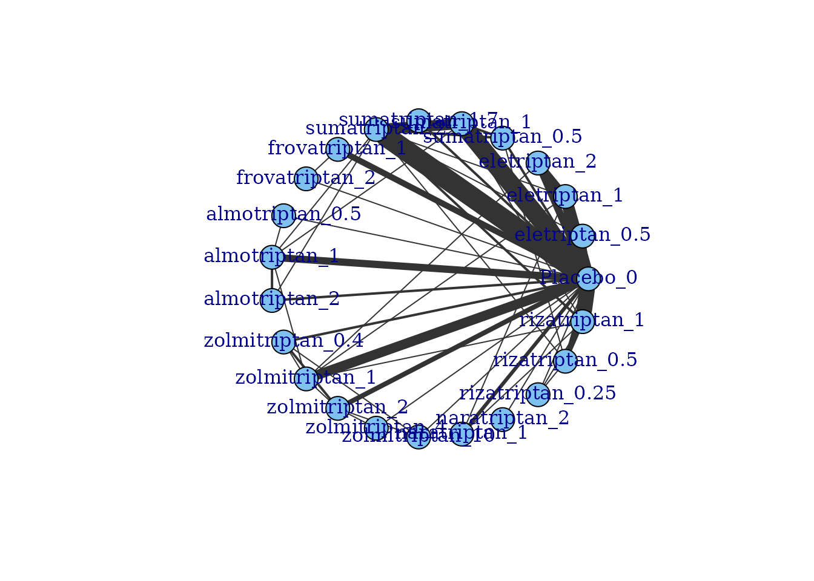
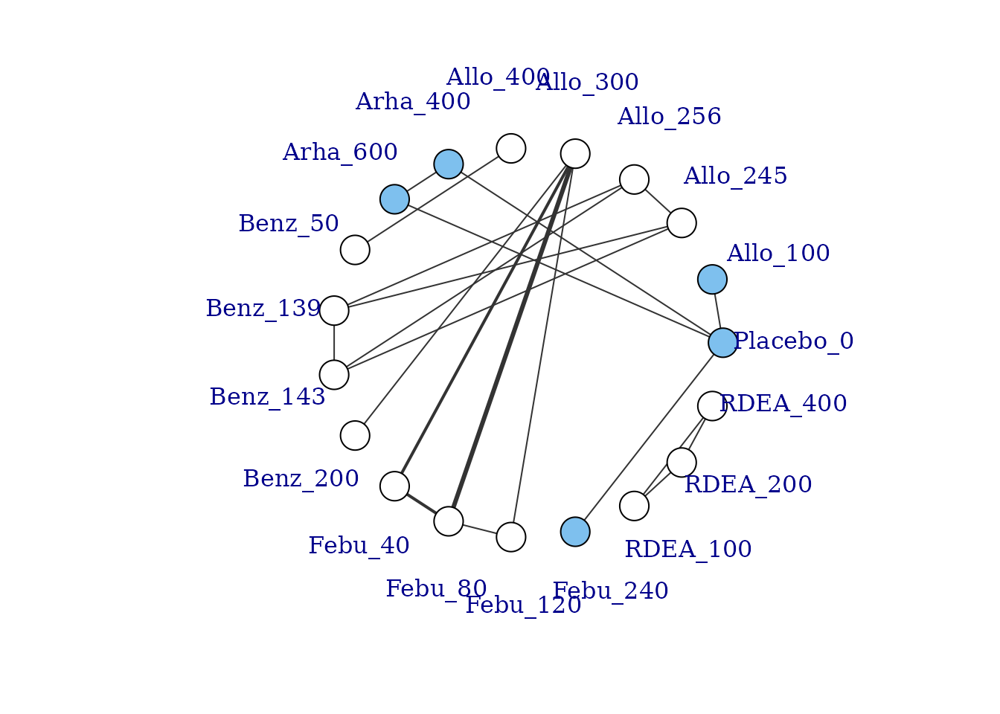
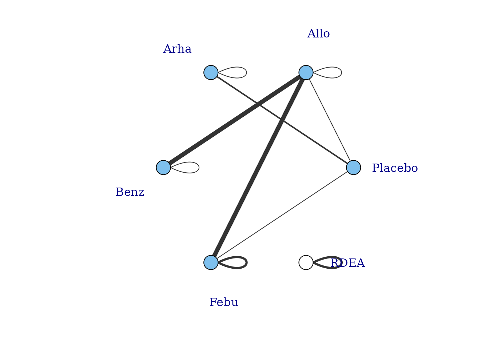
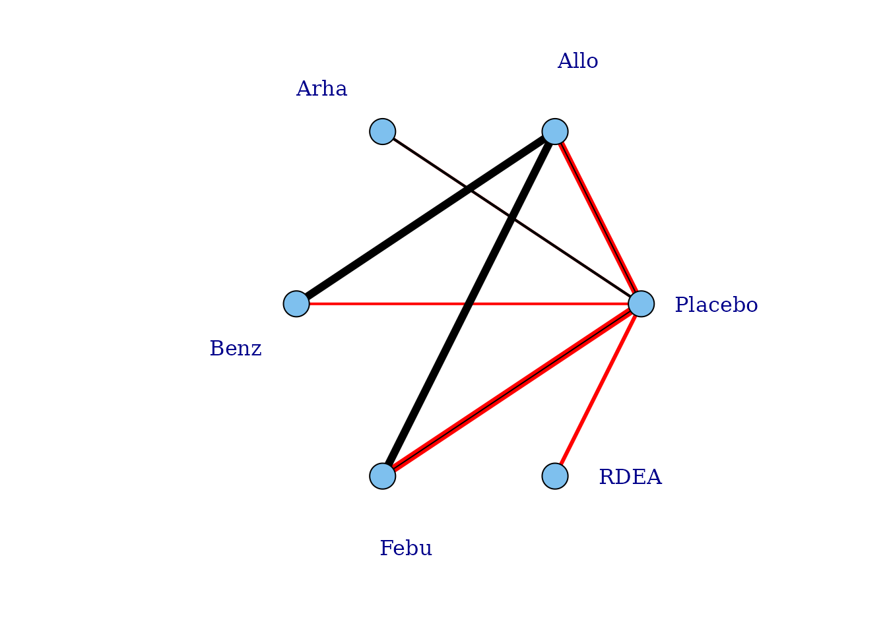
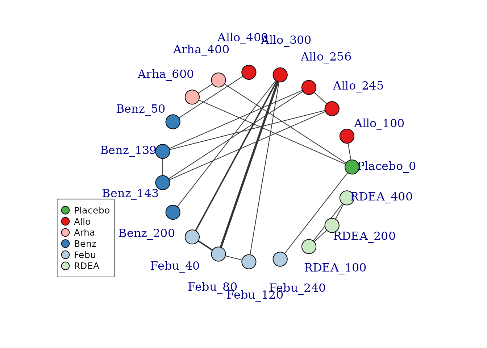
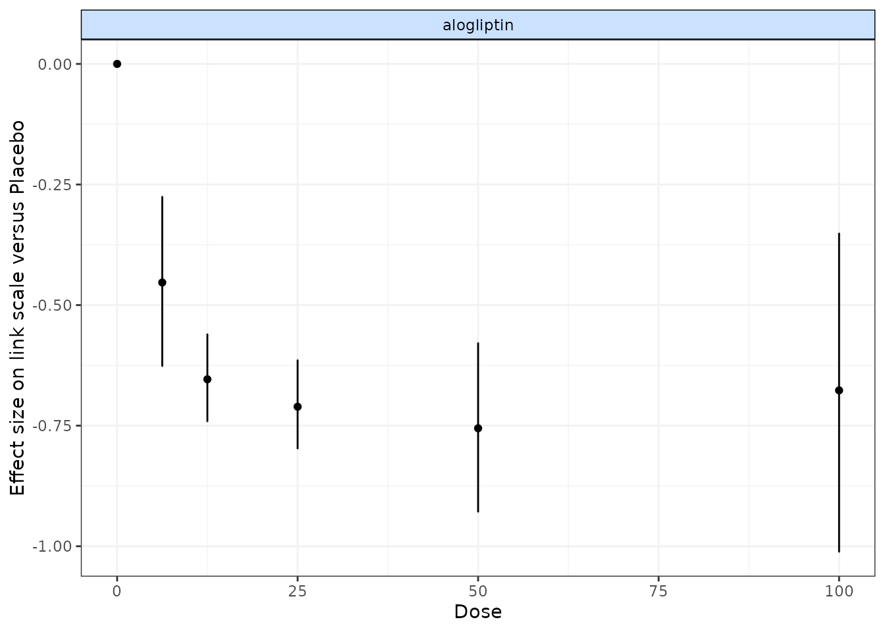

dataexploration-1.RmdBefore embarking on an analysis, the first step is to have a look at
the raw data. Two features (network connectivity and dose-response
relationship) are particularly important for MBNMA. For this we want to
get our dataset into the right format for the package. We can do this
using mbnma.network().
# Using the triptans dataset
network <- mbnma.network(triptans)
#> Values for `agent` with dose = 0 have been recoded to `Placebo`
#> agent is being recoded to enforce sequential numbering
summary(network)
#> Description: Network
#> Number of studies: 70
#> Number of treatments: 23
#> Number of agents: 8
#> Median (min, max) doses per agent (incl placebo): 4 (3, 6)
#> Agent-level network is CONNECTED
#>
#> Ttreatment-level network is CONNECTED
#> This function takes a dataset with the columns:
studyID Study identifiersagent Agent identifiers (can be character, factor or
numeric)dose Numeric data indicating the dose of the given
agent within the study armclass An optional column indicating a particular class
code. Agents with the same name/identifier must also have the same class
code.Depending on the type of data (and the likelihood) the following columns are required:
y Numeric data indicating the mean response for a given
study armse Numeric data indicating the standard error for a
given study armr Numeric data indicating the number of responders in a
given study armn Numeric data indicating the total number of
participants in a given study armr Numeric data indicating the number of events in a
given study armE Numeric data indicating the total exposure time in a
given study armIt then performs the following checks on the data:
Finally it converts the data frame into an object of
class("mbnma.network"), which contains indices for study
arms, numeric variables for treatments, agents and classes, and stores a
vector of treatment, agent and class names as an element within the
object. By convention, agents are numbered alphabetically, though if the
original data for agents is provided as a factor then the factor codes
will be used. This then contains all the necessary information for
subsequent MBNMAdose functions.
Examining how the evidence in the network is connected and identifying which studies compare which treatments/agents helps to understand which effects can be estimated, what information will be helping to inform those estimates, and whether linking via the dose-response relationship is possible if the network is disconnected at the treatment-level. The complexity of dose-response relationships that can be estimated is dependent on the number of doses of each agent available, so this is also important to know.
Network plots can be plotted which shows which treatments/agents have
been compared in head-to-head trials. Typically the thickness of
connecting lines (“edges”) is proportional to the number of studies that
make a particular comparison and the size of treatment nodes
(“vertices”) is proportional to the total number of patients in the
network who were randomised to a given treatment/agent (provided
N is included as a variable in the original dataset for
mbnma.network()).
In MBNMAdose these plots are generated using
igraph, and can be plotted by calling plot().
The generated plots are objects of class("igraph") meaning
that, in addition to the options specified in plot(),
various igraph functions can subsequently be used to make
more detailed edits to them.
Within these network plots, vertices are automatically aligned in a circle (as the default) and can be tidied by shifting the label distance away from the nodes.
# Prepare data using the triptans dataset
tripnet <- mbnma.network(triptans)
#> Values for `agent` with dose = 0 have been recoded to `Placebo`
#> agent is being recoded to enforce sequential numbering
summary(tripnet)
#> Description: Network
#> Number of studies: 70
#> Number of treatments: 23
#> Number of agents: 8
#> Median (min, max) doses per agent (incl placebo): 4 (3, 6)
#> Agent-level network is CONNECTED
#>
#> Ttreatment-level network is CONNECTED
#>
# Draw network plot
plot(tripnet)
If some vertices are not connected to the network reference treatment through any pathway of head-to-head evidence, a warning will be given. The nodes that are coloured white represent these disconnected vertices.
# Prepare data using the gout dataset
goutnet <- mbnma.network(gout)
summary(goutnet)
#> Description: Network
#> Number of studies: 10
#> Number of treatments: 19
#> Number of agents: 6
#> Median (min, max) doses per agent (incl placebo): 5 (3, 6)
#> Agent-level network is DISCONNECTED
#>
#> Treatment-level network is DISCONNECTED
#>
plot(goutnet, label.distance = 5)
#> Warning in check.network(g): The following treatments/agents are not connected
#> to the network reference:
#> Allo_245
#> Allo_256
#> Allo_300
#> Allo_400
#> Benz_50
#> Benz_139
#> Benz_143
#> Benz_200
#> Febu_40
#> Febu_80
#> Febu_120
#> RDEA_100
#> RDEA_200
#> RDEA_400
However, whilst at the treatment-level (specific dose of a specific agent), many of these vertices are disconnected, at the agent level they are connected (via different doses of the same agent), meaning that via the dose-response relationship it is possible to estimate results.
# Plot at the agent-level
plot(goutnet, level = "agent", label.distance = 6)
#> Warning in check.network(g): The following treatments/agents are not connected
#> to the network reference:
#> RDEA
One agent (RDEA) is still not connected to the network, but
MBNMAdose allows agents to connect via a placebo response
even if they do not include placebo in a head-to-head trial
(see [Linking disconnected treatments via the dose-response
relationship]).
# Plot connections to placebo via a two-parameter dose-response function (e.g.
# Emax)
plot(goutnet, level = "agent", doselink = 2, remove.loops = TRUE, label.distance = 6)
#> Dose-response connections to placebo plotted based on a dose-response
#> function with 1 degrees of freedomIt is also possible to plot a network at the treatment level but to colour the doses by the agent that they belong to.
# Colour vertices by agent
plot(goutnet, v.color = "agent", label.distance = 5)
#> Warning in check.network(g): The following treatments/agents are not connected
#> to the network reference:
#> Allo_245
#> Allo_256
#> Allo_300
#> Allo_400
#> Benz_50
#> Benz_139
#> Benz_143
#> Benz_200
#> Febu_40
#> Febu_80
#> Febu_120
#> RDEA_100
#> RDEA_200
#> RDEA_400
Several further options exist to allow for inclusion of disconnected treatments, such as assuming some sort of common effect among agents within the same class. This is discussed in more detail later in the vignette.
In order to consider which functional forms may be appropriate for
modelling the dose-response relationship, it is useful to look at
results from a “split” network meta-analysis (NMA), in which each dose
of an agent is considered as separate and unrelated (i.e. we are not
assuming any dose-response relationship). The nma.run()
function performs a simple NMA, and by default it drops studies that are
disconnected at the treatment-level (since estimates for these will be
very uncertain if included).
# Run a random effect split NMA using the alogliptin dataset
alognet <- mbnma.network(alog_pcfb)
nma.alog <- nma.run(alognet, method = "random")
print(nma.alog)
#> $jagsresult
#> Inference for Bugs model at "/tmp/Rtmpn9iXdC/file250e66db8aee", fit using jags,
#> 3 chains, each with 20000 iterations (first 10000 discarded), n.thin = 10
#> n.sims = 3000 iterations saved. Running time = 1.304 secs
#> mu.vect sd.vect 2.5% 25% 50% 75% 97.5% Rhat
#> d[1] 0.000 0.000 0.000 0.000 0.000 0.000 0.000 1.000
#> d[2] -0.453 0.090 -0.627 -0.514 -0.453 -0.393 -0.275 1.001
#> d[3] -0.653 0.046 -0.742 -0.682 -0.654 -0.624 -0.560 1.001
#> d[4] -0.709 0.045 -0.798 -0.739 -0.711 -0.680 -0.613 1.001
#> d[5] -0.756 0.087 -0.929 -0.814 -0.755 -0.699 -0.578 1.001
#> d[6] -0.682 0.167 -1.012 -0.794 -0.677 -0.572 -0.351 1.002
#> sd 0.123 0.028 0.073 0.103 0.121 0.140 0.184 1.002
#> totresdev 47.264 9.649 30.612 40.433 46.368 53.277 68.028 1.002
#> deviance -124.050 9.649 -140.702 -130.881 -124.946 -118.037 -103.286 1.004
#> n.eff
#> d[1] 1
#> d[2] 3000
#> d[3] 3000
#> d[4] 3000
#> d[5] 3000
#> d[6] 1300
#> sd 1400
#> totresdev 1000
#> deviance 770
#>
#> For each parameter, n.eff is a crude measure of effective sample size,
#> and Rhat is the potential scale reduction factor (at convergence, Rhat=1).
#>
#> DIC info (using the rule: pV = var(deviance)/2)
#> pV = 46.5 and DIC = -77.6
#> DIC is an estimate of expected predictive error (lower deviance is better).
#>
#> $trt.labs
#> [1] "Placebo_0" "alogliptin_6.25" "alogliptin_12.5" "alogliptin_25"
#> [5] "alogliptin_50" "alogliptin_100"
#>
#> $UME
#> [1] FALSE
#>
#> attr(,"class")
#> [1] "nma"
# Draw plot of NMA estimates plotted by dose
plot(nma.alog)
In the alogliptin dataset there appears to be a dose-response relationship, and it also appears to be non-linear.
One additional use of nma.run() is that is can be used
after fitting an MBNMA to ensure that fitting a dose-response function
is not leading to poorer model fit than when conducting a conventional
NMA. Comparing the total residual deviance between NMA and MBNMA models
is useful to identify if introducing a dose-response relationship is
leading to poorer model fit. However, it is important to note that if
treatments are disconnected in the NMA and have been dropped
(drop.discon=TRUE), there will be fewer observations
present in the dataset, which will subsequently lead to lower pD and
lower residual deviance, meaning that model fit statistics from NMA and
MBNMA may not be directly comparable.